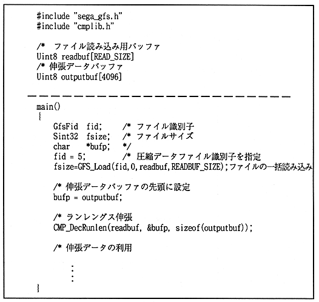

Return to previous page ｜ Return to menu ｜ Go to next page
- Example 2
The following figure shows an example of reading compressed data from a CD-ROM and decompressing it.

Figure 1.7 Extension library usage example 2
Return to previous page ｜ Return to menu ｜ Go to next page